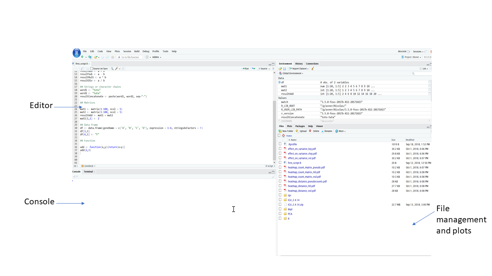

RStudio and R as a calculator
If you are not at EMBL, skip this paragraph. Seneca is a super computer that we have at EMBL. On this computer, the GBCS installed a RStudio server. RStudio is a software that enables you to develop in the R programming language. We will use RStudio during this workshop.
You can either use RStudio on Seneca (for EMBL employees) or install it. For the first option, connect to 'seneca.embl.de'. Click on "Go to RStudio". If asked to enter your login and password please do so. When you are at this point, let me know, I will now show to you how RStudio works and how to setup your account. For the second option, install R then go to RStudio download page to download and install RStudio on your computer.
Below is a quick description of the interface. You can also check the RStudio documentation. You can find also plenty of tutorial videos on Youtube.

The interface consists of 3 main components:
- The editor: This is where the code is written. You can save your work with the file management system (see last point below). You can also display existing scripts such as those provided in this workshop. Save the scripts to your favorite location and use the file management system to open it.
- The console: This is where the code can be tested.
- The file management and plots: You can manage your files from this interface. Plots will also appear in this section.
R is an interpreted language. To cut a long story short, that means that you can code in an interactive manner.
Exercise 1: Start interacting with the console by entering the commands below and pressing 'enter':
- Enter a number
- Enter a decimal number
- Perform addition
- Perform multiplication
- Perform division
- Compute the remainder of 10 divided by 3 (use the %% symbol)
- Compute the cube of 5 (use the ^ symbol)
- Try ((10 + 15) / 5) - 3*2
- Enter '## 2+3'
*NB: The lines starting with '##' are comments. They are not interpreted by the console. It is a good practice to use comments to annotate your code. Believe me, reading a piece of code that you did months or years ago without any comments is a real hassle. Using only one '#' will do the job too, but it is a good practice to use '##'.
Some useful RStudio keyboard shortcuts:
- Retrieve previously entered commands: 'Up arrow'
- Test a command from the editor: 'Ctrl Enter'
- Move cursor to console: 'Ctrl 2'
- Move cursor to editor: 'Ctrl 1'
A complete list of shortcuts can be found here.
You have just performed your first programming session, congrats! R is a kind of super calculator as you saw, but it can do much more than this. In the commands above, we did not stock any result which limits greatly what we can do. R uses different types of variable to store the results and perform subsequent operations on them. First thing first, let see what a variable is and what type of data structure R offers.